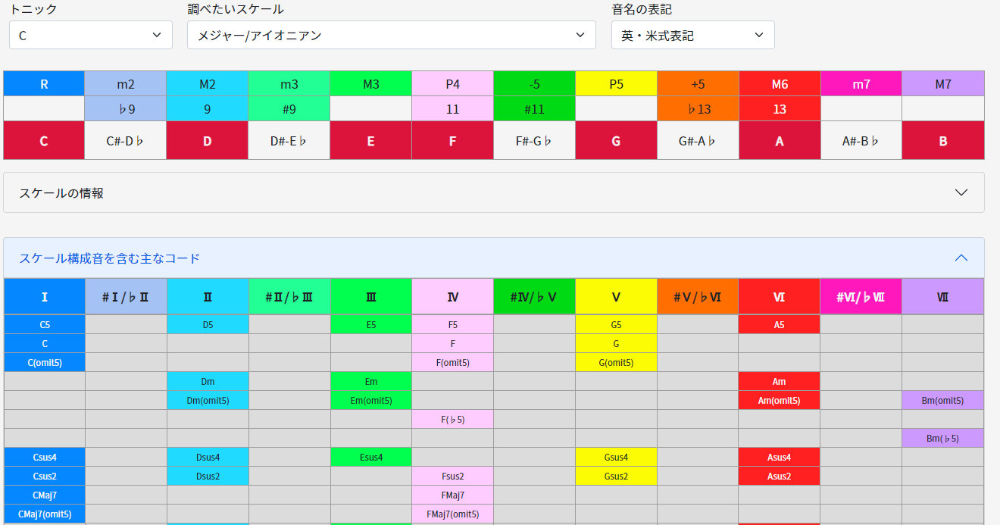
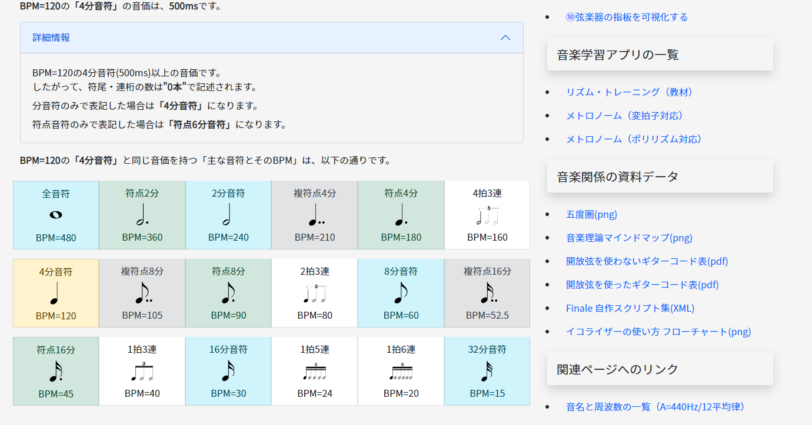

ようこそ！
音楽理論の学習や、作曲・編曲を補助するアプリを作りました。
全て音楽を20年以上やってきた経験から「あったら便利」だと思うものです。
開発者：Yoshito Kimura(KHUFRUDAMO NOTES)
アプリの一覧
各ウェブアプリは、全て無料で使えます。
①コードの構成音を調べる
110種類以上のコードの構成音や情報を、全てのルート音で調べられるアプリです。同時に、指定したコードの構成音を含む主なスケールも表示されます。
②スケールの構成音を調べる
70種類以上のスケールの構成音や情報を、全てのキーで調べられるアプリです。同時に、指定したスケールの構成音を含む主なコードも表示されます。
③コード・ネーム/モードを検索する
構成音からコード・ネームを検索できるアプリです。同時に「コードの説明」、「使い方」、「コードの構成音を含む主なスケール」も表示されます。
④コード進行まとめ
80種類以上のコード進行をまとめたアプリです。表示は全てのキーへ切り替え可能なので、実質1000種類以上のコード進行を確認できます。
⑤ダイアトニック・コード一覧表
ダイアトニック・コードの一覧表アプリです。表示は全てのキーへ切り替え可能です。
⑥転調の間隔・関係調を調べる
指定した調（キー）の関係性を調べられるアプリです。70種類以上のスケールや、モードを指定可能です。
⑦音価の計算をする
指定したBPMの、18種類の「音符の長さ」を計算するアプリです。表示は秒、ミリ秒、マイクロ秒、sec、ms、μsに切り替え可能です。
⑧メトリック・モジュレーション
「メトリック・モジュレーション」に関係する情報を調べるアプリです。様々な「音符の音価」と、「同じ音価を持つ別の音符のBPM」が簡単に分かります。
⑨コード進行のテキストを移調する
コード進行のテキストを移調するアプリです。入力したコード進行のテキストを「12キー全て」と「ディグリー・ネーム」へ変換できます。
⑩弦楽器の指板を可視化する
コードやスケールの「指板上のポジション」を可視化するアプリです。ギターだけではなく、ベース、多弦楽器、レフティー表示も可能です。
メトロノーム（変拍子対応）
変拍子対応のメトロノームです。拍子の分子は1～30まで、分母は2,4,8,16を選択できます。加えてもう1つ別のクリックも追加できます。
メトロノーム（ポリリズム対応）
ポリリズム対応のメトロノームです。音と視覚でポリリズムを理解できます。1～20までの数値を設定可能です。
集中せよ。『音楽』に。
音楽をするために、音楽理論や専門的な知識は必要ですか？
———はい。必要です。
音楽理論や専門的な知識の修得に、凄まじい努力は必要ですか？
———いいえ。必要ありません。
「O-TO(Ongaku
Tools)」を活用してください。
"創造の本質"とは関係の無い部分に、頭脳と時間を使うのは終わりにしましょう。